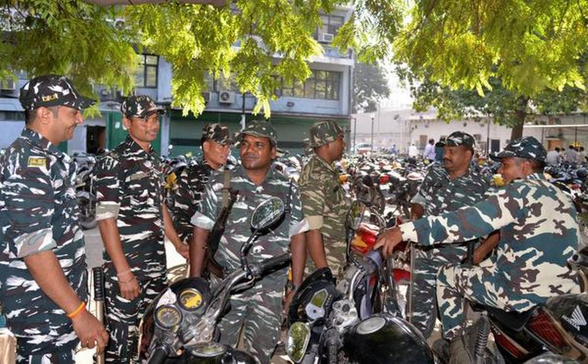
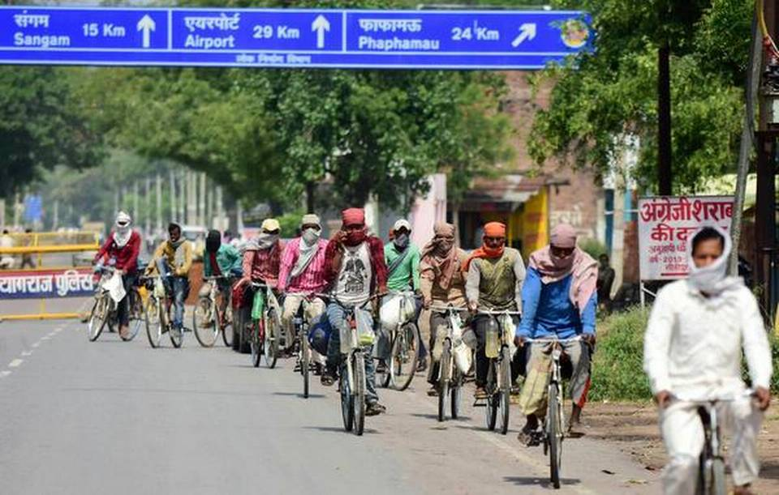

Coronavirus India lockdown Day 39
updates | 122 CRPF personnel test
positive in Delhi

The deadly coronavirus has claimed
over 65,000 lives in the U.S. and over 2,
35,000 lives globally.
The India-wide lockdown, scheduled
to end on May 3, has been extended till
May 17. However, considerable relaxations
have been announced across red, orange and
green zones based on the evidence of COVID-19 infection.
The Hindu has brought out a multi-language
e-book on essential COVID-19 information,
in addition to covering the developments
related to the coronavirus pandemic as it
unfolded. Here is a collection of our daily
cartoons on COVID-19.
Bihar braces for massive influx of
migrants; Nitish asks officials to
pull up their socks

The incidence of coronavirus
outbreak in the State was low, initially,
but there has been a spike of late, partly
because of people coming from outside Bihar.
A massive influx of migrant workers
is expected in Bihar in the near future
and arrangements must be in place for their
mandatory 21-day quarantine, medical tests,
treatment and economic rehabilitation, Chief
Minister Nitish Kumar has said.
At a marathon meeting here on Friday
which lasted for close to six hours, Mr. Kumar
asked officials to pull up their socks as the
migrants, students and pilgrims, said to be in millions,
seem poised to return home in droves onboard special
trains run by the Centre.